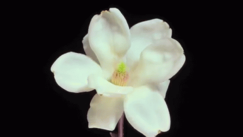

Now, in this moment
I see myself as an emerging deity -
Soon to be like my friends, Ala, Chukwu, and Oshun
I still remember the different girls I was before though and I wish I could tell them…
According to Nigerian spirituality, your father is still very much alive. He’s thriving but just in another form of existence
According to Nigerian spirituality, your hair, your being, and your body is divine and sacred
According to Nigerian spirituality, you are not your emotions
Your anxiety nor your panic attacks
You are Isabelle Otito Analo.
You are your father’s daughter.
